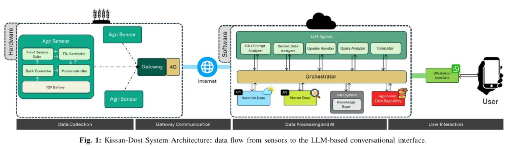
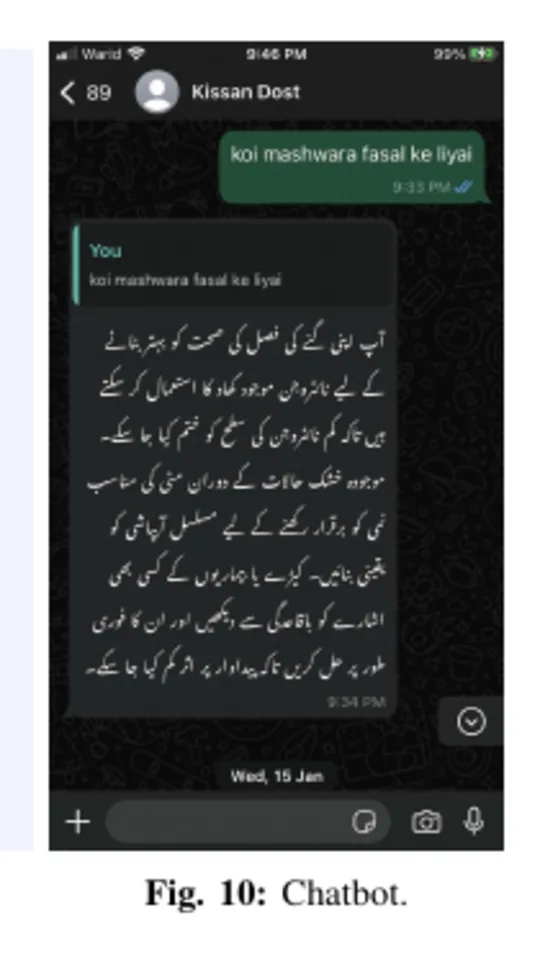
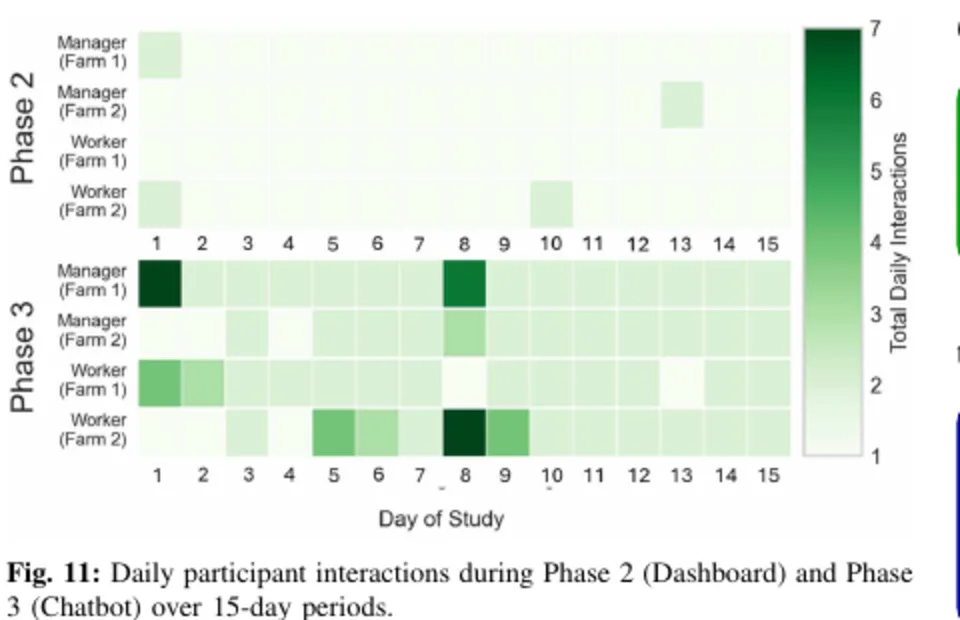

Kissan-Dost: Bridging the Last Mile in Smallholder Precision Agriculture with Conversational IoT
Urdu WhatsApp voice and text advice grounded in live field measurements.



Problem
Technical dashboards and language barriers make farm sensor data difficult to use. Smallholder farmers need guidance in familiar languages and interfaces.
Work
- Built the multi hop ESP NOW monitoring mesh that relayed soil and climate measurements to a gateway.
- Supported sensing, firmware, and field deployment at two sites.
- Connected measured field conditions to a multilingual WhatsApp interface supporting text and voice queries.
Result
- The five-participant pilot ran at two field sites for 45 days each.
- The mesh extended coverage beyond direct gateway range.
- Farmers maintained near daily use and used the guidance to inform irrigation after dashboard engagement faded.
- Model judges scored correctness above 90 percent on 99 sensor-grounded crop queries.
- The work was accepted at IEEE DCOSS IoT 2026.